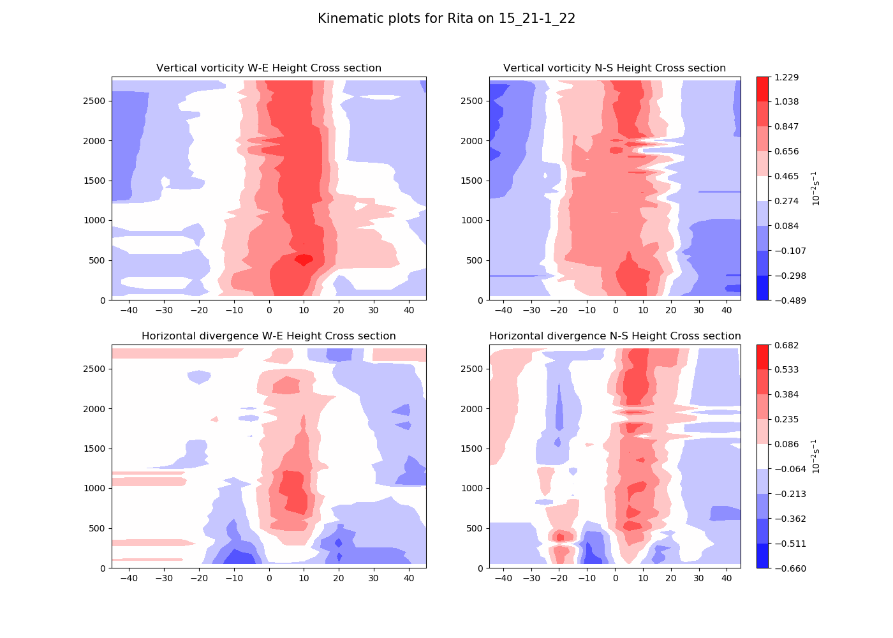
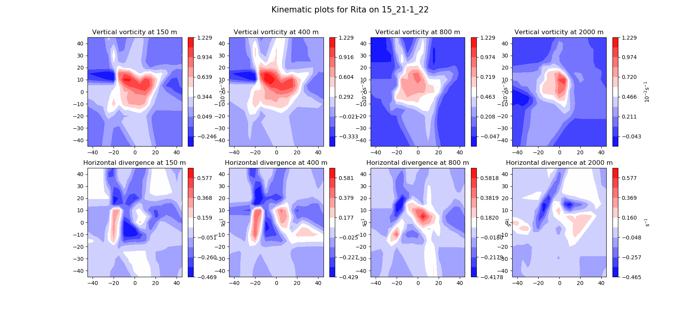

Plot vorticity and divergence in 3D views¶
One of the most important kinematic metrics are vorticity and divergence. Both directly related to the first spatial derivative of the wind components.
As such, the definitions used therein are:
where \(\hat{\eta}\) is the three-dimensional vorticity vector and \(\eta_{\hat{k}}\) is the vertical component of the vorticity. In general, the \(\hat{i}\) and \(\hat{j}\) components of the vorticity are usually ignored given the small variation of u and v on the z axis and the small scale of the vertical component of the velocity and therefore its small gradient across all axis.
Hereafter we will refer to the vertical component of vorticity as simply vorticity and it is given as:
Similarly, the divergence of the wind field is classically defined as:
Note
This example is not documented in-line but it is rather explained through the Sphinx-Gallery pages, i.e., through this text floating around on top of the text-block. This allows to have short but explained example files.
Also noteworthy is the use of Metpy algorithm (although not the actual script) to compute these variables.
The first section of this example includes the preamble, which is highly documented in sphx_glr_auto_examples_plot_drift_dropsondes.py() and processing().
import os
import sys
import numpy as np
import matplotlib.pyplot as plt
from toolbox import convergence_vorticity
from scipy.interpolate import griddata
- The example is based on reading-in the outputfile of the module
processing(), just as Plot the wind and temperature structure of a TC is, - which is a temporary file written by the external Julia routine. The file is then imported as a numpy array through the function np.genfromtxt.
storm='Rita'
sdate='15_21-1_22'
matrix=np.genfromtxt(storm+sdate+'.txt')
radius=matrix[:,0]
Height=H=matrix[:,5]
u_cartesian=matrix[:,2]
v_cartesian=matrix[:,3]
u_radial=matrix[:,11]
v_tang=matrix[:,10]
x=matrix[:,12]
y=matrix[:,13]
pressure=matrix[:,8]
thetas=matrix[:,1]
The following block sets-up the rest of the example by first defining the variables storm and stormdate (sdate).
Given that this script is originally meant to be run by the interface(),
it has two system arguments, i.e., strings provided by either the user or the outer script.
These two parameters are the storm name and the date of the measurement. This can be provided by the user as in this example.
After allocating these parameters, the figure directory is defined but it can be changed and adapted to user’s os.
Next, the initial interpolation grid in 3D through xi,yi and height_vec.
Finally, the vorticity and divergence arrays are constructed based on the size of our 3d interpolation grid.
Note
User can modify and tamper the figure directory to select the directory of their choice.
In the documented Sphinx-script, a slightly different approach was used to first, define the storm’s name and date and then use an output file for this script. Reader is advised to compare and contrast documented and operational versions. The version in this example is then deprecated from the DVT.
#storm=sys.argv[1]
#sdate=sys.argv[2]
storm='Earl'
sdate='01-09-2010'
print(sdate)
figdir='/home/jlgf/Documents/MRes/Project/figs/'+storm+'/'
xi=np.arange(-140,140,5)
yi=np.arange(-140,140,5)
height_vec=Hi=np.arange(50,2800,50)
vorticity=np.zeros((len(xi),len(yi),len(Hi)))
divergence=np.zeros((len(xi),len(yi),len(Hi)))
Computation of vorticity and divergence.¶
The following block is a for-loop to iterate over all height values in the height vector. At each step, this loop obtains the indexes (indices) where u and v components of the velocity are located in the height window. Similarly, x and y are sliced to obtain the locations of the u and v observations.
After slicing toolbox.convergence_vorticity() is called and used to provide vorticity and divergence fields in the Horizontal grid.
These are then allocated in the 3D arrays defined above.
for ij,H0 in enumerate(height_vec):
try:
indices=np.where((H>=H0-50)& (H<H0))[0]
u_xh=griddata((x[indices],y[indices]),u_cartesian[indices], (xi[None,:], yi[:,None]),method='linear')
v_xh=griddata((x[indices],y[indices]),v_cartesian[indices], (xi[None,:], yi[:,None]),method='linear')
except:
vorticity[:,:,ij]=divergence[:,:,ij]=np.nan
continue
nabla_dot_u,nabla_cross_u=convergence_vorticity(u_xh*units.meters/units.seconds,v_xh*units.meters /units.seconds,10000*units.meters,10000*units.meters,xi,yi,dim_order='xy')
vorticity[:,:,ij]=nabla_cross_u*100
divergence[:,:,ij]=nabla_dot_u*100
After creating the proper fields, two different plots will be produced, as in Plot the wind and temperature structure of a TC: cross sections and plan views.
Cross section¶
The cross section plot is similarly constructed to other examples, although this are not r-H axisymmetrical view points but North-South and East-West cross sections. This code-block (chronologically) creates the figure object, allocates subplots and contourplots with specified levels and color maps. Notice two things, first, these cross sections are based on where y and x are 0, which provides the sense of the N-S and E-W cross sections. Similarly, this block does not make use of dictionaries for code simplicity but rather makes explicitly each plot. Several reasons for this decision but the main rationale is that code clarity would be severly tampered if the block was based on a dictionary loop as in Plot the wind and temperature structure of a TC while gaining only little space.
plt.figure(figsize=(14,10))
ax=plt.subplot(221)
CS=ax.contourf(xi,Hi,vorticity[:,np.where(yi==0)[0][0],:].T,cmap='bwr',levels=np.linspace(np.nanmin(vorticity),np.nanmax(vorticity),10))
#plt.colorbar(CS)
plt.xlim([-90,90])
plt.ylim([0,2800])
plt.title('Vertical vorticity W-E Height Cross section')
ax=plt.subplot(222)
CS=ax.contourf(yi,Hi,vorticity[np.where(xi==0)[0][0],:,:].T,cmap='bwr',levels=np.linspace(np.nanmin(vorticity),np.nanmax(vorticity),10))
plt.colorbar(CS,label=r'$10^{-2}$s$^{-1}$')
plt.xlim([-90,90])
plt.ylim([0,2800])
plt.title('Vertical vorticity N-S Height Cross section')
ax=plt.subplot(223)
CS=ax.contourf(yi,Hi,divergence[:,np.where(yi==0)[0][0],:].T,cmap='bwr',levels=np.linspace(np.nanmin(divergence),np.nanmax(divergence),10))
#plt.colorbar(CS)
plt.xlim([-90,90])
plt.ylim([0,2800])
plt.title('Horizontal divergence W-E Height Cross section')
ax=plt.subplot(224)
CS=ax.contourf(yi,Hi,divergence[np.where(xi==0)[0][0],:,:].T,cmap='bwr',levels=np.linspace(np.nanmin(divergence),np.nanmax(divergence),10))
plt.colorbar(CS,label=r'$10^{-2}$s$^{-1}$')
plt.xlim([-90,90])
plt.ylim([0,2800])
plt.title('Horizontal divergence N-S Height Cross section')
plt.suptitle('Kinematic plots for '+storm+' on '+sdate,fontsize=15)
plt.savefig(figdir+'axisym/kinematic'+sdate+'.png')
plt.close()
The final part of this exercise is to define the title, based on the storm’s name and date and save the figure.
plt.suptitle('Kinematic plots for '+storm+' on '+sdate,fontsize=15)
plt.savefig('figs/kinematic'+sdate+'.png')
plt.close()
Plan views¶
Plan views refer to a plot that shows the horizontal structure as viewed from above in the z-axis. In other words, we take all points in a particular height and compute interpolated horizontal grids.
The first block includes the set-up of the plot by defining the levels where plan views will be plotted (heights) and creating the figure objects.
Heights=[150,400,800,2000]
fig=plt.figure(figsize=(18,8))
After this, a for-loop structure is written to iterate over all heights specified in the Heights list. Inside this loop, vorticity and divergence fields are sliced using a similar syntax as the cross sections by finding the index where the height vector has the specified height.
In this case, the for loop is used for compression, plotting vorticity in the upper panels and divergence in the lower panels. We acknowledge the subplot syntax is not trivial and indeed can be subject to questions when compressed as below. See subplots for details.
for index,height in enumerate(Heights):
ax=plt.subplot(241+index)
try:
CS=ax.contourf(xi,yi,vorticity[:,:,np.where(Hi==height)[0][0]],cmap='bwr',levels=np.linspace(np.nanmin(vorticity[:,:,np.where(Hi==height)[0][0]]),np.nanmax(vorticity),12))
except:
continue
#plt.colorbar(CS)
plt.colorbar(CS,label=r'$10^{-2}$s$^{-1}$')
plt.xlim([-90,90])
plt.ylim([-90,90])
plt.title('Vertical vorticity at '+str(height)+' m')
ax=plt.subplot(245+index)
CS=ax.contourf(xi,yi,divergence[:,:,np.where(Hi==height)[0][0]],cmap='bwr',levels=np.linspace(np.nanmin(divergence[:,:,np.where(Hi==height)[0][0]]),np.nanmax(divergence),12))
plt.colorbar(CS,label=r's$^{-1}$')
plt.xlim([-90,90])
plt.ylim([-90,90])
plt.title('Horizontal divergence at '+str(height)+' m')
Finally the plot needs a title, shown and saved.
plt.suptitle('Kinematic plots for '+storm+' on '+sdate,fontsize=15)#
plt.savefig('figs/kinematic'+sdate+'.png')
plt.close()
Expected cross sections for Rita in September 21, 2005 :¶
Expected plan views for Rita in September 21, 2005 :¶
This script can be used by both inserting in the interface the name of storm and selecting the option create plots of the 3D kinematic structure. Similarly, this script can be used individually if the storm name, date and the filename are specified in the second block of this example.